Agent-centric-real-to-sim · 归档于 2026-11-05
Video2Sim2Real
Video2Sim2Real: Full-Stack Autonomous Dexterous Skill Acquisition from a Single Human Video
归档到 Agent-centric real-to-sim：一段人手视频建成 simulator-ready twin，在 twin 里修轨迹、训 policy，再上真机；第二相关 Robot learning in simulation（residual RL、sim-to-real）。注意这篇没有 LLM agent，见自动化账本。
TL;DR
- Problem
- 人手视频里有完整的任务，但估出来的手被遮挡，retarget 到 Leap Hand 后摸不到物体；RL 修不动这条轨迹，在 twin 里修好了也过不了 sim-to-real。
- Idea
- 用物体运动当监督：flow 找 contact / interaction / detachment 关键帧，只优化这几帧的手，再当 anchor 插值原轨迹；上真机时 IL 管物体在哪（点云 → 手位姿，只查询一次），residual RL 只动手指。
- Result
- 真机 7 个任务 67/70 = 95.7%（Table 2）；FoundationPose 15.7%，Pure-RL (finger) 45.7%，Pure-IL 5.7%，Pure-RL (arm+finger) 3.0%（Table 11，每任务 5 次）。全链只有一次 Gemini 结构化调用，没有 agent 循环。
Problem
retarget 出的手在接触那一刻就错位了；RL 修不动，twin 里修好了也上不了真机
Running example · 后面每个 stage 都跟着它走
Apple Preparing：一台固定的 RealSense D455 拍下人手拿起红苹果放进青色的碗的 RGB-D 视频，加上操作前的一张参考 RGB-D 图、相机内参、相机 / 桌面 / 机器人之间的外参 → 想要：7-DoF Kinova + 16-DoF Leap Hand 在同一张桌上把苹果放进碗，苹果和碗挪一点也能成。
flowchart TD IN["例子输入
人手把苹果放进碗"]:::example IN --> A1["直接回放
HaMeR
Mink IK"] A1 --> AX["手被挡，接触错位
Missed grasp
无成功率"]:::gap IN --> B1["信 retarget
Residual RL
Deep-mimic RL"] B1 --> BX["底轨迹差，抬不稳
Lift ≤ 46.7
Succ 0.0"]:::gap IN --> C1["不信 retarget
Pre-Contact Init
Object-only"] C1 --> CX["到位但松不开手
Obj 53.3
Succ 0.0"]:::gap IN --> D1["修好再上真机
FoundationPose
DP3 · Pure RL"] D1 --> DX["错位或抓不紧
真机 0/10
真机 0/5"]:::gap
数字都是 Apple 这一列：Lane 2、3 来自 Table 5（仿真，每列取该族最好的变体），Lane 4 来自 Table 2 和 Table 11（真机）。Lane 1 论文只有 Fig. 5 / Fig. 6 的图，没有单独报回放成功率。"坏在哪"：Lane 2 是 §5.2 的总体解释（"noisy retargeted trajectories"），不是 Apple 单独的诊断；Lane 3 取 Opt-Pre-Contact (Flow + Aux)，是推断：成功 = lift ∧ object pose ∧ hand（D.2.1），Lift 100.0、Obj 53.3 而 Succ 0.0，只能是 hand 条件没过；Lane 4 的现象来自 E.5 和 Fig. 10。
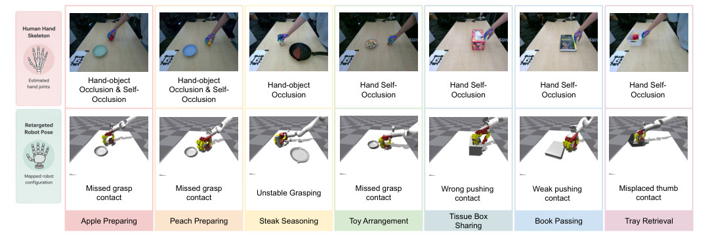
怎么读这张图
- 上排 "Human Hand Skeleton"：HaMeR 估出的手画在真实帧上，每列写遮挡类型。Apple 列是 "Hand-object Occlusion & Self-Occlusion"。
- 下排 "Retargeted Robot Pose"：同一帧 retarget 到机器人后的样子。Apple 列是 "Missed grasp contact"：手在苹果旁边，没包住。
- 七列都有问题：抓取类是 Missed grasp contact 或 Unstable Grasping，推拉类是 Wrong / Weak pushing contact、Misplaced thumb contact。
根本问题：retarget 轨迹在接触那一刻错位，而任务真正的结果（物体怎么动）从没被直接用来定手的位姿。 这篇的切入点：不修整条轨迹，只修物体运动指出的几帧；几何误差交给 IL，接触误差交给手指级 residual RL。
Related work
| 相关工作 | 解决什么 | 怎么解决 | 和本文的区别 |
|---|---|---|---|
| 同一问题 · 别的解法 | |||
| Residual on retarget Chen et al. [14]、Guzey et al. [15] | retarget 轨迹 → 可执行动作 | 在 raw 轨迹上学局部 residual（arm + finger） | 上限被底轨迹卡住 → 本文先修底轨迹，residual 只留给手指 |
| Motion-guided reward Vividex [16]、DeepMimic [17]、OmniRetarget [18] | 学一条贴近人手的新轨迹 | retarget 作 reward 和终止条件 | 整条坏轨迹都在当参考 → 本文只信物体指出的几帧 |
| Pre-contact init Lum et al. [19] | 一段演示 → 真机灵巧 policy | 只取接触前位姿，再用物体 reward 学后段 | 接触后全靠探索，丢了时序 → 本文保留全段并插值 |
| Object-only RL X-Sim [20]、SimToolReal [21]、GenFlowRL [22] | 跨 embodiment 复现物体运动 | 不用人手，物体运动作 reward | 没有运动先验，高维状态难探索 → 本文用物体定 anchor，用人手定过渡 |
| 单学习器 sim-to-real Pure IL [53, 54]、Pure RL [14, 19]、FoundationPose 部署 [14, 68] | twin 里的技能 → 真机 | DR 下只用 IL，或只用 RL，或靠位姿估计器校正 | 一个模块同时扛几何和接触 → 本文 IL 管几何、RL 管接触 |
| 相似做法 · 别的问题 | |||
| Digital-twin 构建 Video2Policy [40]、Gen2Sim [41]、RialTo [42]、URDFormer [44]、PhysTwin [45] | 为操作建 sim 环境或数据 | 重建或生成场景，再在里面学 | 重点在建场景 → 本文的 twin 全用现成模型拼，贡献在 twin 之后（§1 贡献列表） |
来源：论文 §1、§2 Related Work、§5.2–5.3、App C、E.1；未另行检索。
Level 1 · Big picture
物体怎么动决定手该在哪：先在 twin 里修关键帧，再用两个分工明确的 policy 上真机
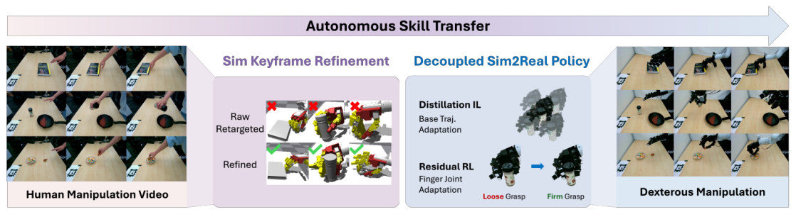
怎么读这张图
- 左 "Human Manipulation Video"：输入，一段单视角人手视频。图里是书、牛排调味、玩具三个任务。
- 中左 "Sim Keyframe Refinement"："Raw Retargeted" 一行打叉，"Refined" 一行打勾：同一接触帧修前修后。这是第一个贡献。
- 中右 "Decoupled Sim2Real Policy"："Distillation IL" 做 "Base Traj. Adaptation"（跟着物体改底轨迹）；"Residual RL" 做 "Finger Joint Adaptation"（Loose Grasp → Firm Grasp）。这是第二个贡献。
- 右 "Dexterous Manipulation"：同样的任务在真机上。
flowchart LR I["Input
一段人手 RGB-D"]:::example --> M["Sim：修关键帧
apple 的 3 个 anchor"]:::win M --> O["Real：两个 policy
Apple 10/10"]:::win
Level 2 · Stages
6 个 stage：估计、修关键帧、学两个 policy、部署，外加一个可选的 planner
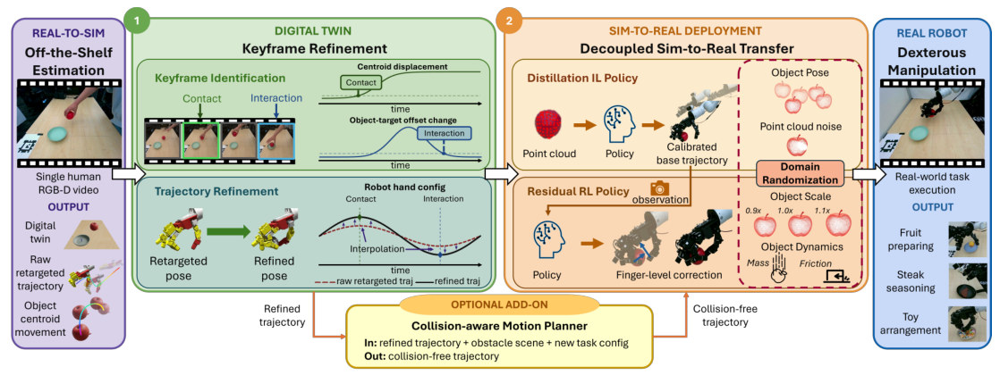
怎么读这张图
- 左紫框 "REAL-TO-SIM · Off-the-Shelf Estimation"：输入 Single human RGB-D video；OUTPUT 三样：Digital twin、Raw retargeted trajectory、Object centroid movement → Stage 1、2。
- 绿框 ①上半 "Keyframe Identification"：两条曲线：Centroid displacement 定 Contact，Object-target offset change 定 Interaction → Stage 3 前半。
- 绿框 ①下半 "Trajectory Refinement"：Retargeted pose → Refined pose；右图红虚线 raw、黑实线 refined，在两个关键帧被拉到新值，其余时刻 Interpolation → Stage 3 后半。
- 橙框 ② "SIM-TO-REAL DEPLOYMENT"：Distillation IL Policy 给 Calibrated base trajectory；Residual RL Policy 给 Finger-level correction；红虚线框是 Domain Randomization → Stage 4、5。
- 底部 "OPTIONAL ADD-ON"：Collision-aware Motion Planner，吃 refined trajectory + 障碍物场景 + 新任务配置 → Stage 6。
- 右蓝框 "REAL ROBOT"：Fruit preparing、Steak seasoning、Toy arrangement 等真机输出。
flowchart TD IN["Input
视频 + 参考帧 + 标定"]:::example IN --> S1["1 · Digital twin
apple、bowl URDF"] IN --> S2["2 · Motion priors
raw q + 3D flow"] S1 --> S3["3 · Keyframe refinement
修好的手部轨迹"]:::win S2 --> S3 S3 --> S4["4 · Decoupled policy
2 个 IL + 1 个 RL"]:::win S3 -.-> S6["6 · Spatial generalization
Apple 重放失败"]:::gap S4 --> S5["5 · Real inference
真机 10/10"] S6 -.-> S4 click S1 href "#stage-1" click S2 href "#stage-2" click S3 href "#stage-3" click S4 href "#stage-4" click S5 href "#stage-5" click S6 href "#stage-6"
点击 stage 展开 Level 3 细节。虚线是可选的 add-on。
自动化账本：哪一步是自动的，agent 在哪
- 全链没有 LLM agent。正文和附录都没把任何模块叫 agent（"agentic" 只出现在引用 [72][73] 的标题里）。没有工具调用循环，没有失败后的反思或改写。
- 唯一的大模型调用是 Stage 1 的 Gemini：论文只描述了一次 query，JSON schema 约束输出；产物是物体清单、材料、角色、任务类型。
- "Autonomous" 的意思（§3、§5.1）：没有 robot demonstration、expert annotation、motion capture，技能在仿真里优化和学习后部署。它不是"没有人"：人要拍视频、贴 tag、摆物体。
| 步骤 | 谁做 | 类型 | 人给了什么，或论文没说什么 |
|---|---|---|---|
| 拍视频 + 参考帧 | 人 + D455 | 人 | 每个任务一段视频，加一张操作前的 RGB-D 图（§3） |
| 内外参 Tc→t、Tc→r、Tt→r | 预贴 AprilTag（§6） | 人，前提 | §3 列为已知输入；相机固定，拍视频和部署是同一台（§5.1） |
| 物体、材料、角色、任务类型 | Gemini | LLM，一次 | prompt 和 schema 手写；论文没报准确率，也没写校验或重试 |
| mask、mesh、URDF | SAM3、SAM 3D Objects、导出脚本 | 现成模型 + 规则 | 质量由体积 + 材料估，摩擦、恢复系数查表；表的数值没印 |
| 手轨迹 → 机器人关节 | HaMeR、Mink | 现成模型 | Eq. 1 的权重 λ 没印 |
| 物体 flow | CoTracker + depth | 现成模型 | 无 |
| 关键帧 | 阈值规则 | 手写规则 | δc=4、Lc=50、δi=1.0、Li=3、3 cm，跨任务固定（A.2.1）；§6 自认 heuristic |
| 修关键帧、插值 | Lightning Grasp、仿真测试、IK | 搜索 + 规则 | scene flag b_along 和"对称物体"标记由谁给，没写 |
| IL、residual RL 训练 | 监督回归、PPO | 学习 | 奖励系数跨任务一致；每段 demo 一个 RL policy；"best runs from this sweep" 怎么选没写（A.3.2） |
| 真机执行 | SAM3 + CoTracker + 两个 policy | 自动 | trial 之间由人复位物体（项目页 one-shot 视频的 Reset 段）；baseline 跑到危险时人工停（E.5） |
全链的"检查再重试"只有 3 处，都是规则，都在仿真里：抓取采样不够就放宽范围重采（A 次），仿真摇晃测试不过就重新生成，cuRobo 轨迹按碰撞和转臂过滤。出错后没有模型或人来诊断原因。
Level 3 · Details
每个 stage 的细节
Stage 1 Digital-twin reconstruction 3 个视频帧 + 参考 RGB-D + 内外参 → 物体 mesh、URDF、角色、任务类型
- Why：后面所有修正都要一个能跑物理的练习场，而且不能依赖事先的物体模型（G.1）。
- 输入：首、中、末 3 帧给时序线索，参考图 Is 给少遮挡的全景；几何来自 (Is, Ds) 和内外参（A.1.1）。
- Gemini（引用的是 Gemini 1.5 报告 [55]，实际版本没写）：做 5 件事：列出物体短 prompt；从 10 词表选材料（wood、plastic、metal、glass、rubber、ceramic、cardboard、foam、fabric、other）；判断中间帧到末帧谁被操作；分任务类型；有交互时指出 target。manipulated 和 target 必须是清单里的条目。
- SAM3：每个 prompt 在 Is 上出一个 mask。
- SAM 3D Objects：depth 反投影成 metric point map，每个 mask 出一个 raw mesh 和相机系初始位姿。
- 导出：固定朝向校正，最低点落到支撑面，转到桌面系，每个物体一个 URDF。
- 物理参数不是测的：质量和惯量由 mesh 体积 + 材料标签估，摩擦和恢复系数查 material-property table。
- 没对上的地方：prompt 说任务类型是 "interactive manipulation or pushing"，schema 是
put_object_to_object|manipulate_object，Stage 3 又按 grasping / pushing / pulling 分；三种说法怎么对应，论文没写。
flowchart TD a["Gemini，一次 query
apple → bowl"] --> b["SAM3
每个 prompt 一个 mask"] b --> c["SAM 3D Objects
raw mesh + 位姿"] c --> d["URDF export
质量由体积 + 材料估"]
Running example 在这一步
角色是 apple → bowl（Table 9）；论文没印这次 Gemini 的实际 JSON。输出是苹果、碗各一个 URDF，放在桌面系里（Fig. 2 左框 "Digital twin"）。用时 1m 49s（Table 13）。
Stage 2 Motion priors RGB-D 视频 → raw retargeted 关节轨迹 + 物体 3D flow
- Why：两种先验：手的运动给时序和手型，物体的运动给任务真正的结果。
- HaMeR：每帧 21 个 3D 手部 keypoint（相机系），转到机器人 base 系。
- Mink IK（Eq. 1）：让 4 个指尖位置、wrist 位置、wrist 朝向同时贴近人手，带关节限位和碰撞约束，再 Gaussian 平滑。
- CoTracker：在 manipulated 和 target 的 mask 上取 flow points 追 2D，用 depth 抬成 3D，转到桌面系。
- 地位：手轨迹只算有噪声的先验，后面不信它的接触那一段；物体 flow 是后面的主要监督。
flowchart LR v["RGB-D 视频"]:::example --> h["HaMeR
21 个 keypoint"] h --> m["Mink IK
raw 轨迹 q"] v --> c["CoTracker
2D flow"] c --> l["Depth lift
3D flow"]
Running example 在这一步
raw 轨迹在 contact 帧是 Missed grasp contact（Fig. 6）；苹果和碗各有一组 3D flow points。Retargeting 1m 57s，object motion 11s（Table 13）。
Stage 3 Object-centric keyframe refinement twin + raw 轨迹 + 物体 flow → 修好的完整轨迹，不训练 policy
- Why：学 residual 被坏轨迹限制，抛掉轨迹又探索不动（§1）。折中：只在物体说"这一刻重要"的帧上直接求解手的位姿。
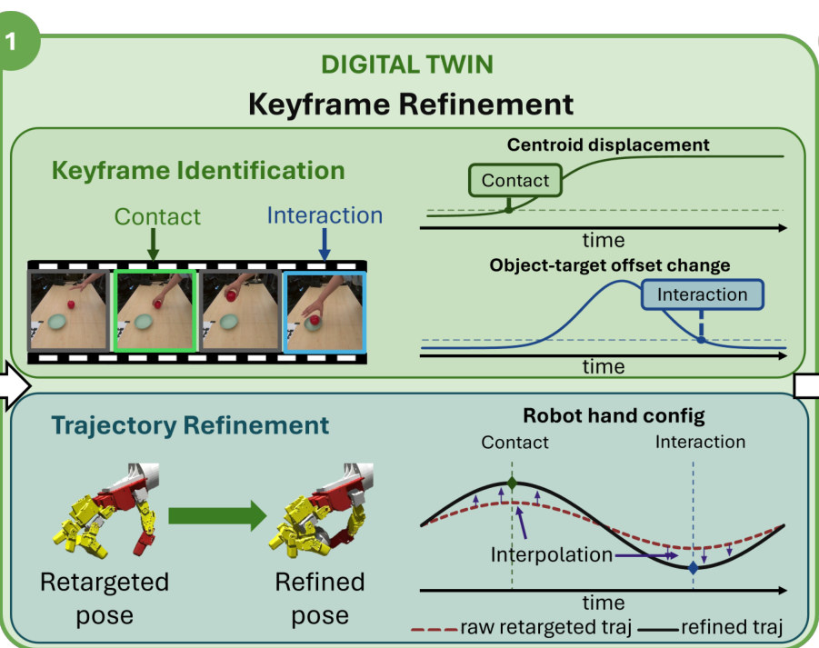
怎么读这张图
- 胶片：绿框是 Contact 帧，蓝框是 Interaction 帧。
- "Centroid displacement"：苹果 flow 质心离起点的位移，越过虚线并持续 → Contact。
- "Object-target offset change"：苹果相对碗的 offset 变化量，先升后落，落回虚线下 → Interaction。
- "Trajectory Refinement" 左：黄色手从没包住（Retargeted pose）到包住（Refined pose）。
- "Robot hand config"：红虚线 raw，黑实线 refined；绿、蓝菱形是两帧优化出的值，小箭头 Interpolation 把其余时刻带过去。图里没画 detachment 帧，A.2 里有。
| 符号 | 白话 | Apple 里 |
|---|---|---|
| Tc | contact 帧：物体开始持续移动 | 苹果被拿起的时刻。帧号没报 |
| Ti | interaction 帧：Tc 之后，物体相对目标的 offset 不再变化 | 苹果到了碗上 |
| Td | detachment 帧：Tc 之后物体高度首次低于桌面上 3 cm | 苹果落下，手该松开 |
| δc、Lc | 位移阈值、要连续多少帧 | 4、50（2D flow，单位没写，推断是像素） |
| δi、Li | 相对运动阈值、要连续多少帧 | 1.0、3 |
| Tch→m | contact 帧上手相对物体的变换 | 手在苹果坐标系里的位置和朝向 |
| 带 hat 的 T̂ | 修正后的同一个量 | 最后选中的抓取 |
- Contact 帧，抓取（A.2.2）：回放 raw 轨迹得到手-物粗位姿 → 判 top / side 抓，只改手的位置，保留演示的朝向 → 以此为中心跑 Lightning Grasp → 清理接触点（去掉孤立点和贴近桌面的点）→ 退一段得到 pre-grasp。
- 仿真验证：每个候选走 approach、pre-grasp、close、lift，再沿 3 个轴和 wrist 旋转摇晃；物体始终抬高超过 τlift = 6 cm 且手不碰桌才接受，不过就重新生成。§4.2 还写选 object tracking error 最小的。
- Interaction 帧：用 3D flow 对应点做 Kabsch + RANSAC，得到物体目标位姿，再乘上修正后的手-物变换 → 手的目标位姿。
- Detachment 帧：让手在 flow 给出的位置放开物体。
- 插值：关键帧上解精确 IK 并固定，段间用阻尼最小二乘（DLS）校正，blend 用 quintic smoothstep α(s) = 6s⁵ − 15s⁴ + 10s³（两端速度为 0，不跳变）。
- 抓取 4 段：Hand-pose、Pre-grasp、Grasping（arm 不动，手指合）、Post-grasp tracking。倒料类任务没有 release 帧，手一直握着。
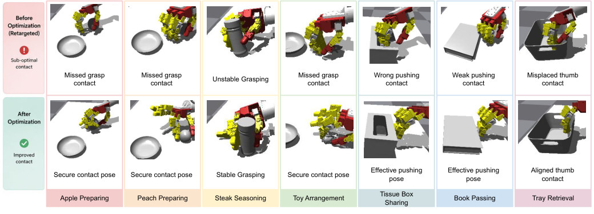
怎么读这张图
- 第 1 列 Apple："Missed grasp contact" → "Secure contact pose"，手从苹果旁边移到包住苹果。
- 第 5 列 Tissue："Wrong pushing contact" → "Effective pushing pose"，手指换到盒子的正确一侧，这是推拉分支。
flowchart TD a["Object flow → 关键帧
T_c、T_i、T_d"] --> b["Contact：抓取搜索
Lightning Grasp"] b --> c["仿真摇晃测试
抬高超过 6 cm 不掉"]:::win c -->|"没过，重新生成"| b c --> d["Interaction · Detachment
Kabsch + RANSAC"] d --> e["Anchor 插值
IK + DLS + quintic"]:::win
Running example 在这一步
苹果得到 contact、interaction、detachment 三个 anchor。不训练任何 policy：keyframe detection 5s，keyframe refinement 10m 21s，interpolation 33s（Table 13）。回放成功 100.0，所有 baseline 都是 0.0（Table 5）。
第二段视频到来：Tissue Box。任务类型是推拉（Table 10），没有抓取搜索：用 3D flow 算运动方向，在盒子一侧选接触点，让指尖法向对准方向，手指关节不动。只有 3 段：Pre-contact、Contact、Post-contact tracking。keyframe refinement 只要 27s（Table 13）。
Stage 4 Decoupled policy learning refined 轨迹 + twin → IL（点云 → 关键帧手位姿）+ residual RL（手指修正）
- Why：修好的轨迹只对 twin 成立。RL 单独扛所有随机化，residual 要很大，会破坏平滑和避碰；IL 单独做，要反复生成并验证轨迹，DP3 这类 policy 还更慢（§4.3.1）。
- 分工：几何 gap 给 IL，接触和物理 gap 给手指级 residual RL。
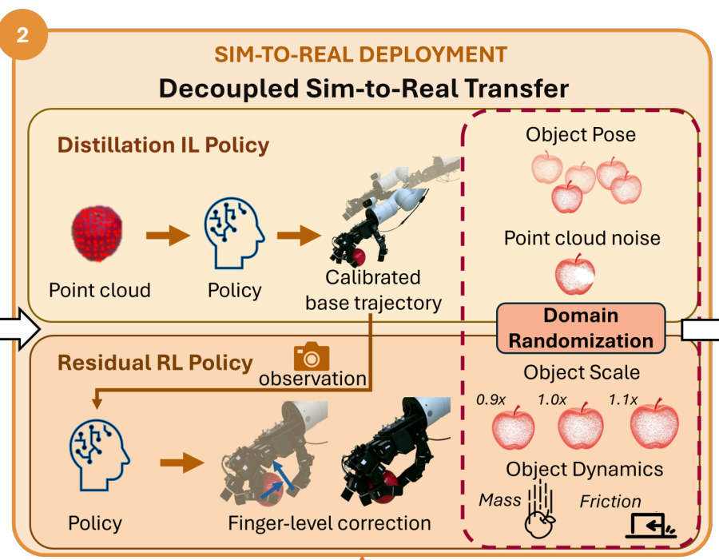
怎么读这张图
- "Distillation IL Policy"：Point cloud → Policy → Calibrated base trajectory。苹果点云进，手的关键帧位姿出，底轨迹被校准到真实苹果上。
- "Residual RL Policy"：observation → Policy → Finger-level correction。蓝箭头把手指往苹果收，arm 不动。
- 红虚线 "Domain Randomization"：IL 一行是 Object Pose、Point cloud noise；RL 一行是 Object Scale（0.9×、1.0×、1.1×）、Object Dynamics（Mass、Friction）。这是示意：Table 3 里 IL 的 mesh scale 范围是 [0.8, 1.2]。
| 符号 | 白话 | Apple 里 |
|---|---|---|
| c | 观测点云的质心 | 苹果点云的中心 |
| Δp、r6D | 手相对质心的平移、手的 6D 旋转（IL 要预测的量） | contact 时手该在苹果的哪儿 |
| q̄cur、q̄t+1 | 归一化的当前关节角、下一步参考关节角 | 此刻和下一步的手型 |
| ct | 当前 3D flow 质心 | 苹果现在在哪 |
| Δxt、Δθt | 物体当前的位移、旋转增量 | 苹果这一步动了多少 |
- IL 数据：每个任务 2k–4k 个样本，全部合成：随机摆物体（±5 cm、yaw ±10°），把演示的手-物关系解析地映射过去，不跑轨迹（A.3.1）。
- IL 观测：100 个预采样点云，缩放、变换、voxel（1.0–1.7 cm）、hidden-point removal 得到单视角局部点云；再加 jitter（≈1 mm）和 dropout（至多 20%）。
- IL 模型：mask-aware PointNet-style 残差网络，约 10⁵ 参数；loss 是平移误差 + 旋转矩阵误差，权重都是 1。
- IL 的分法：抓取用两个模型（manipulated 云 → contact 位姿，target 云 → interaction 位姿），推拉只用 contact。
- RL 动作：只动手部关节，幅度裁到 0.06，arm 跟优化后的参考走（A.3.2）。
- RL 奖励：3D flow tracking（比较物体质心轨迹）+ residual 动作惩罚，系数跨任务一致。
- RL 随机化：observation、action、control gains、object scale、mass、friction。范围没印。
- RL 训练：PPO，8192 个并行环境，actor / critic 是 128-256-256 的 MLP，仿真 60 Hz、每条指令保持 5 步，每段 demo 一个 policy。
- 为什么用点云不用位姿（App B）：建 sim 用的特权信息越多，gap 越大；在随机几何上蒸馏，相当于把不确定的几何积分掉，只依赖观测（Eq. 3）。
flowchart TD R["Refined 轨迹
苹果的 3 个 anchor"] R --> I["IL：几何
2k–4k 合成样本"]:::win R --> L["Residual RL：接触
PPO，手指修正"]:::win I --> IO["点云 → 手位姿
apple云→contact
bowl云→interaction"] L --> LO["观测 → 手指修正
Loose → Firm Grasp"]
Running example 在这一步
Apple 是抓取：两个 IL 模型，一个 residual RL。IL 训练 45m 40s，RL 训练 55m 1s（A40，Table 13）。
Stage 5 Real-world inference 真实 RGB-D + refined 轨迹 + 两个 policy → 发给底层控制器的关节指令
- Why：物体不在视频里的位置，twin 也有误差。
- 第 1 步：D455 拍 RGB-D，用 SAM3 + CoTracker 跟物体点云。
- 第 2 步：机器人进工作区之前，IL 查询一次：初始点云 → 关键帧手位姿。这样观测不被手遮挡。
- 第 3 步：用 IK + 插值把 refined 轨迹改到这些位姿上。
- 第 4 步：每一步 residual RL 读真实反馈改手指，再发给低层控制器。
- 推断：执行中 arm 不再看相机（IL 只查一次，RL 不动 arm），物体被碰动后 arm 这层没有纠正。
flowchart TD a["RGB-D + SAM3 + CoTracker
苹果、碗的点云"]:::example --> b["IL，查询一次
手还没进画面"] b --> c["IK + 插值
轨迹对准真实苹果"] c --> d["Residual RL，每步
手指修正"]
Running example 在这一步
苹果和碗摆在 10 个不同位姿（Fig. 9 第一行），每次重新走这 4 步：10/10（Table 2）。
Stage 6 Spatial generalization（可选） twin + refined 轨迹 + 新任务配置 → 无碰撞轨迹，或判定无解
- Why：Stage 4、5 只覆盖局部变化。物体离演示位置很远时，要重新规划（§4.4）。
- 抓放：用手-物相对变换算新的 contact、interaction 手位姿；cuRobo 分段规划：approach，再到中间 waypoint，再到 interaction。waypoint 取两者中点，否则规划器会贴着桌面滑（A.4）。
- 推拉：只用 cuRobo 规划 approach，之后走直线加连续 IK，因为转弯的推拉不稳。
- 手指：cuRobo 不管手指，用参考轨迹按 contact / interaction / detachment 相位插值，再查碰撞。
- 收尾：规划的末端常差约 1 cm，到位后做一次短时 IK 修正；再过滤手指碰撞和异常的转臂。
flowchart TD a["新位姿 + 相对变换
新的 contact 手位姿"] --> b["cuRobo 分段规划
approach、waypoint"] b --> c["手指相位插值
短时 IK 修约 1 cm"] c --> d["过滤
Apple 重放失败"]:::gap
Running example 在这一步
苹果这里失败了：Apple 和 Toy 生成的轨迹重放不成功，论文猜是 waypoint 约 2 cm 的误差就够让精细任务失败（G.2）。Tissue、Book、Tray、Peach、Steak 各给了 2 条仿真 rollout。
Recap：例子覆盖了论文的哪些 idea
| 论文里的 idea | 例子里在哪体现 |
|---|---|
| 现成模型拼 twin | Stage 1：Gemini 给 apple → bowl，SAM3 + SAM 3D 出 URDF，1m 49s |
| 手和物体两种先验 | Stage 2：raw q 在 contact 帧抓空；苹果和碗有 3D flow |
| Object-centric keyframes | Stage 3：Tc、Ti、Td 全部来自物体运动，阈值固定 |
| 抓取搜索 + 仿真验证 | Stage 3：Lightning Grasp，摇晃后苹果不掉才接受 |
| 推拉分支 | Stage 3：第二段视频 Tissue Box，不搜抓取，对准运动方向 |
| Anchor 插值 | Stage 3：其余时刻保留人手时序 |
| IL 管几何 | Stage 4、5：苹果点云 → contact，碗点云 → interaction，查询一次 |
| Residual RL 管接触 | Stage 4、5：手指修正，Loose → Firm Grasp |
| 碰撞感知的 spatial generalization | Stage 6：Apple 失败，这是它的边界 |
| 主结果 | E3：Apple 10/10，baseline 全 0 |
Results
修关键帧在仿真里赢过 RL，两个 policy 让它在真机上站住；证据最弱的是 spatial generalization
顺序同论文：E1 修轨迹的方法对不对（成功率、安全、平滑）→ E2 随机化下 policy 稳不稳 → E3 真机成功多少 → E4 两个 policy 是否都要 → E5 花多少时间 → E6 物体挪远能不能规划。
E1在 twin 里，修关键帧比用 RL 修轨迹好吗？§5.2 · D.3
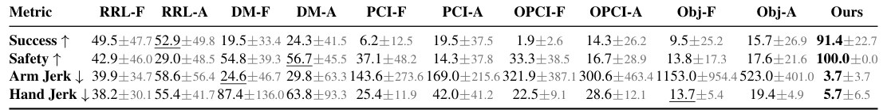
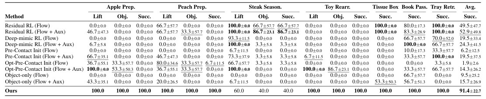
- 说明什么
- 成功率更高、更安全、更平滑，而且不用训练。Success 91.4 vs 最好 baseline 52.9（RRL-A）；Safety 100.0 vs 56.7（DM-A）；Arm Jerk 3.7 vs 24.6（DM-F）；Hand Jerk 5.7 vs 13.7（Obj-F）。Apple 上每个 baseline 的 Succ 都是 0.0，Ours 100.0。唯一反例是 Steak：Residual RL (Flow + Aux) 86.7，Ours 40.0；论文解释这条 retarget 本来就好（D.1），Ours 没到 100 归因于 Isaac Gym 的接触变化（D.3）。
- 在故事里
- 第一个贡献：比起信任或抛弃人手轨迹，在 anchor 上直接求解更好。
- 指标
- Success：Table 4 的条件全过。抓取：抬高超过 0.05 m，末端离目标小于 0.07 m，松手后接触力小于 0.1 N。推：末端位置误差小于 0.10 m，朝向误差小于 60°。
- Safety：只算撞桌：任一帧接触力超过 20 N 就算碰撞（D.2.2）。
- Jerk：指令轨迹三阶差分的 RMS（D.2.3）。
- 怎么评测
- Isaac Gym，7 个任务，每任务 10 次。
- 5 种 baseline × 2 种 reward，各 3 个 seed，最多训 10 h，8192 个环境，单张 A40；取 reward 最高的 checkpoint（§5.2、C.2）。
- Ours 是一条确定轨迹，不训练，逐任务没有 std。
- Opt-Pre-Contact 也从优化后的 contact pose 起步，Apple Lift 100.0 而 Succ 0.0：差距在 contact 之后（推断）。
E2几何和物理都随机化时，decoupled policy 还稳吗？§5.3 · E.2–E.3
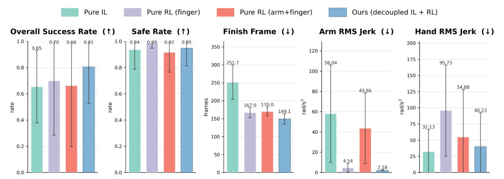
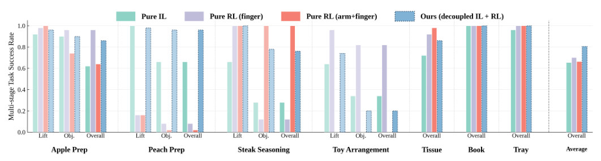
- 说明什么
- 成功率最高、完成最快，但不是全胜。Overall 0.81 vs 0.70 / 0.66 / 0.65；Finish Frame 149.1 vs 167.0 / 170.0 / 251.7；Arm Jerk 2.18 最低。Safe Rate 0.95 第二（Pure RL (finger) 0.99）。Hand Jerk 40.23 高于 Pure IL 的 32.13，所以 caption 的 "most coherent" 不含这一项。Toy 上 Pure RL (finger) 约 0.8，Ours 约 0.2（Fig. 8 读图，论文没印）；论文猜物体小，只靠手指够了（E.3）。
- 在故事里
- 上真机之前先说明分工对随机化有用。
- 指标
- 同 E1，加 Finish Frame：物体此后一直留在末值 5 mm 内的第一帧，只算成功 trial（D.2.4）。
- 怎么评测
- 每任务同一组 N = 50 个 held-out 配置：平移、绕 z 转、等比缩放（E.2）。
- 范围（Table 9、10）：Apple ±5 cm、±10°、scale [0.8, 1.0]；Steak ±2 cm；Toy ±0.5 cm、0°；推拉 ±5 cm、0°、[0.9, 1.0]。任务之间不一样宽。
- Pure-RL：优化轨迹上的 residual，finger-only 和 full action 两版。Pure-IL：随机化下生成成功轨迹，用 DP3 蒸馏，手指轨迹用启发式调（E.1）。
- FoundationPose 不做这组仿真测试。
E3真机上到底成功多少？§5.3 · E.4–E.5
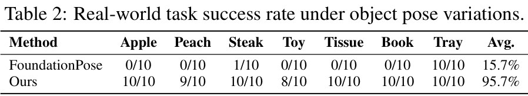
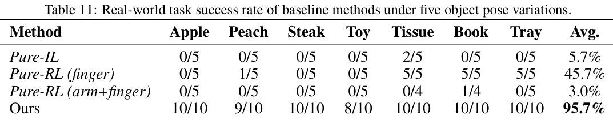
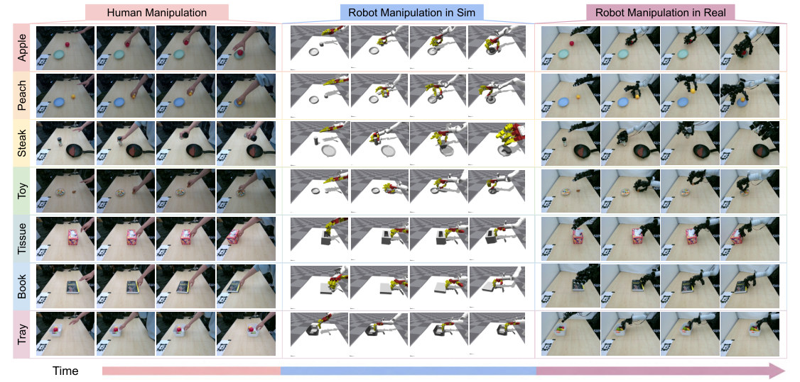
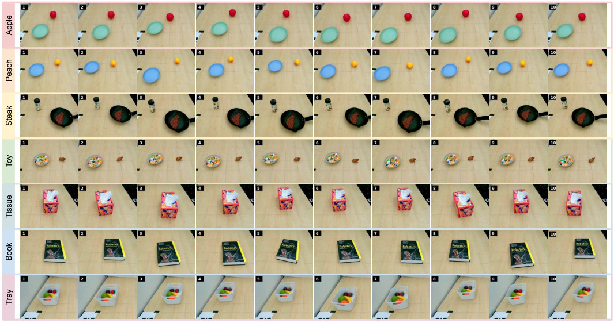
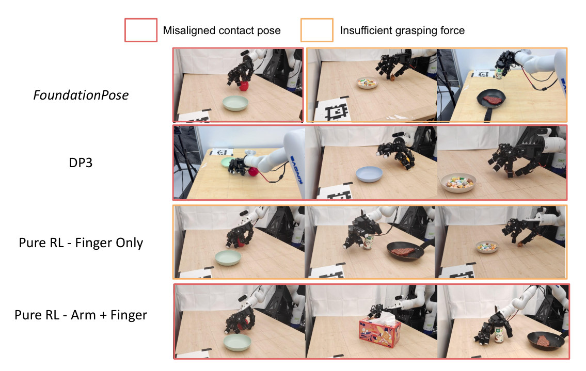
- 说明什么
- 成功率远高于所有 baseline。Ours 67/70 = 95.7%；FoundationPose 11/70 = 15.7%；Pure-RL (finger) 16/35 = 45.7%；Pure-IL 2/35 = 5.7%；Pure-RL (arm+finger) 1/33 = 3.0%。4 个抓取任务差距更大：Ours 37/40，FoundationPose 1/40，其余 baseline 至多 1/20（总数是我按两张表加的）。Pure-RL (finger) 的 16 次里有 15 次在 3 个推拉任务上。
- 在故事里
- 全文落点。FoundationPose 这行是最干净的对照：同一 residual RL、同样 10 次，只把 IL 换成位姿估计器。
- 指标
- 任务成功次数。论文没写真机上怎么判成功、谁判；Table 4 用接触力，是仿真的定义。
- 怎么评测
- 7-DoF Kinova + 16-DoF Leap Hand，单台固定 D455。物体放在视频位置附近，"slight perturbations"。
- Ours、FoundationPose 各 10 次；其他 baseline 5 次（10 次的子集），理由是减少硬件磨损（E.5）。
- Pure-RL (arm+finger) 的 Tissue 第 4 次手指 MCP link 断了，所以 0/4；Book 为什么也是 4 次没写。
- 样本小，没有置信区间。Pure-RL (arm+finger) 多次撞桌，人工中止（E.5）。
- 仿真不预言真机（我的观察）：Fig. 4 四种方法只差 0.65–0.81，真机差到 3.0%–95.7%；Ours 的 Toy 在 Fig. 8 约 0.2，真机 8/10。两边的扰动范围不同，只能看量级；论文没讨论这个落差。
E4IL 和 residual RL 少一个行不行？E.6
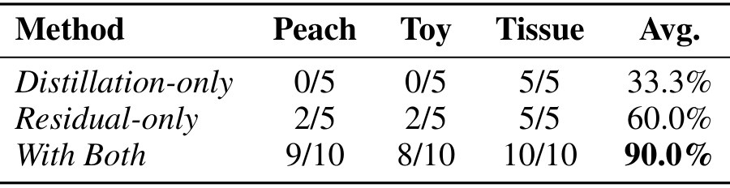
- 说明什么
- 两个都要。Avg Distillation-only 33.3%、Residual-only 60.0%、With Both 90.0%。Peach 0/5、2/5 vs 9/10；Toy 0/5、2/5 vs 8/10。Tissue 都全过：论文猜盒子大、容差宽，但没有 IL 时最终位姿误差更大。
- 在故事里
- 说明分工不是多余的复杂度。
- 指标
- 真机任务成功次数。
- 怎么评测
- 只有 3 个任务：Peach、Toy、Tissue。
- 两个消融各 5 次，With Both 沿用 Table 2 的 10 次，分母不同。
E5从视频到可部署要多久？App F
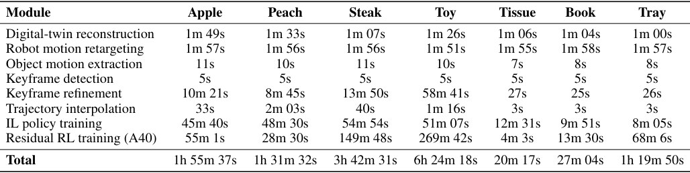
- 说明什么
- 20 分钟到 6.4 小时，大头是训练。最快 Tissue 20m 17s，最慢 Toy 6h 24m 18s。Apple 1h 55m 37s，其中 IL 45m 40s、RL 55m 1s，训练之前的部分合计 14m 56s（我加的）。Toy 的 keyframe refinement 58m 41s、RL 269m 42s：物体小，抓取难找（App F）。
- 在故事里
- 支撑"efficiently"：相比之下 E1 里 baseline 的单次训练上限是 10 h。
- 指标
- 各模块的时间，按任务列出。
- 怎么评测
- 只有 RL 一行标了 A40，其他模块的硬件没写。
- 表里没有录视频、标定和真机的时间。
- A.3.2 说 RL 有 sweep，这张表是否包含整个 sweep 没写。
E6物体挪远、加障碍物，planner 能生成新轨迹吗？§5.4 · App G
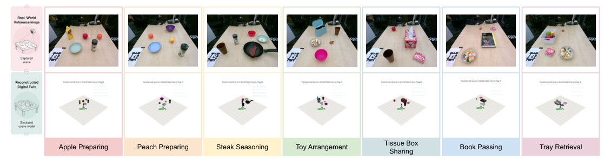
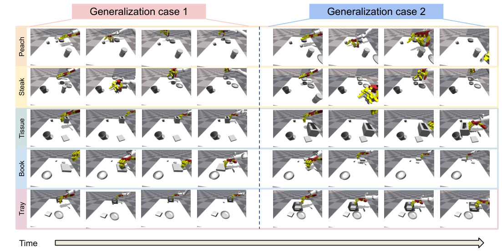
- 说明什么
- 只有定性结果，只在仿真。Peach、Steak、Tissue、Book、Tray 各 2 条 rollout。Apple 和 Toy 重放不成功，论文猜 cuRobo 的 waypoint 容差：约 2 cm 误差就够让任务失败，所以精细任务还要靠 policy。
- 在故事里
- 第三个贡献的 "broader spatial generalization"，全文证据最弱的一环。
- 指标
- 论文没给数值指标，也没给成功率表。
- 怎么评测
- 7 段带多个障碍物的新视频，重建 twin、做 keyframe 优化，再采样新位姿，用 cuRobo 规划（App G）。
- §5.4 和 App G 没有报告真机结果。
Limits
局限和开放问题
- 作者：只在稀疏 keyframe 上修，in-hand reorientation 这类任务要连续调整（§6）。
- 作者：keyframe 检测靠启发式，长时序任务要更通用的 motion analysis（§6）。
- 作者：只支持 non-articulated 物体（§6）。
- 作者：要 RGB-D 和预贴的 AprilTag；in-the-wild 还要 depth estimation 和 auto-calibration（§6）。
- 作者：residual RL 没有 tactile，手-物遮挡下的接触适应还有空间（§6）。
- 推断：视频和部署是同一张桌、同一台 D455，"single human video" 不等于网上的视频；每段 demo 都要重新训 policy，没有跨任务复用。
- 推断：Gemini 的角色判断没有准确率和校验，错了后面全错；7 个任务都只有一个被操作物和至多一个 target。
- 推断：真机的判定标准和人工介入记录不全（见 E3）。项目页是匿名的 Under Review 版本，标题用 "Self-Sufficient"，和 arXiv 的 "Autonomous" 不同。
For Agent-centric real-to-sim
对我们有什么用
- sim-to-real 证据（r2s-lite 还没有）：同一 residual RL，只换位姿校准就是 15.7% vs 95.7%（Table 2），只有 IL 是 33.3%（Table 12）：修好的轨迹加一个位姿估计还不够。r2s-lite 目前只回放，要做真机证据，这里给了最小配方：点云 → 关键帧位姿（约 10⁵ 参数，2k–4k 个解析标签）+ 手指 residual。证据全来自 16-DoF 灵巧手，放到夹爪上是否成立，论文没有证据。
- Mass 和 friction（它也没测）：这篇同样是 assumed：体积 + 材料估质量，摩擦查表（A.1.1），再靠 RL 随机化 mass、friction、scale、gains 扛住，真机仍到 95.7%。启发（推断）：assumed 值要配范围和一个会适应的 policy，纯回放用不上这一招；随机化范围没印，也没有消融。能直接借的是 Gemini 给每个物体一个材料标签。
- 相机位姿和物体角色（这篇没解决）：§3 直接假设外参已知（固定 D455 + AprilTag），对 DROID 约 20 cm 的相机误差没有帮助。角色是一次 Gemini JSON，schema 只有两种任务类型，"take the lid off" 这种不在 7 个任务里。能借的是 Tc / Ti / Td 的思路：用物体 track 的实测运动核对角色（推断：物体和 receiver 的 offset 是收敛还是发散），r2s-lite 已经有 SAM3 tracks。